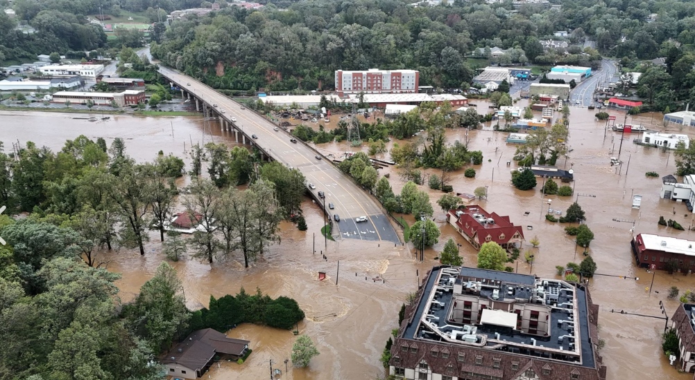
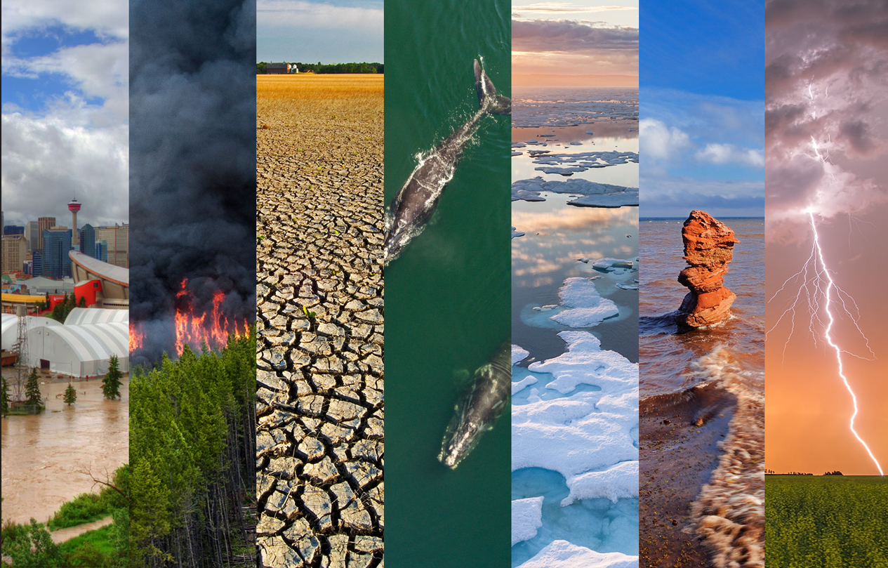

Homeland Security Student | GIS | Emergency Management
Developing geospatial products that support hazard assessment, critical infrastructure planning, and community resilience.
View Projects View ResumeI am a Homeland Security student at the University of New Hampshire specializing in Emergency Management and Geographic Information Systems (GIS). My work focuses on applying geospatial analysis to understand natural hazards, critical infrastructure, and community resilience.
Through academic projects, applied GIS coursework, and a university GIS internship, I have developed skills in ArcGIS Pro, ArcGIS Online, ArcGIS StoryMaps, spatial analysis, geospatial data management, and cartographic design. I enjoy integrating data from multiple sources to produce maps and geospatial products that support emergency planning, hazard assessment, and data-driven decision-making.
My portfolio highlights projects that demonstrate my ability to collect, analyze, visualize, and communicate spatial information through interactive applications and professional cartographic products.
UNH Facilities Capital Planning & Management | Spatial Data Systems
Supported campus planning initiatives through GIS data management, ArcGIS Pro analysis, and geospatial visualization. Developed digital mapping products, improved spatial data accuracy, and assisted with hazard assessment and infrastructure mapping projects.
Developed emergency preparedness resources for city-run programs, including an Emergency Action Plan for summer camp operations. Collaborated with municipal departments to improve safety planning, communication, and emergency response procedures.
Managed daily operations across multiple aquatic facilities, supervising staff, coordinating emergency response procedures, and maintaining safety standards for large public facilities.

Developed an ArcGIS StoryMap analyzing Hurricane Helene impacts across Florida and Georgia through hazard mapping, critical infrastructure analysis, healthcare accessibility, evacuation planning, and community resilience assessment.
View Project →Multi-hazard GIS assessment evaluating tornado vulnerability, healthcare access, critical infrastructure, and community resilience in Erie County, New York.
View Project →Supported UNH Facilities Capital Planning & Management through ArcGIS Pro, ArcGIS Online, spatial data management, campus mapping, and infrastructure-focused GIS projects.
Project materials are limited due to institutional data confidentiality.

Conducted quantitative research using the 2020 American National Election Studies (ANES) dataset to analyze relationships between socio-political factors and attitudes toward climate change. Utilized RStudio for data cleaning, statistical analysis, and visualization to communicate research findings.
View Project →Interested in GIS, emergency management, or geospatial analysis opportunities? Feel free to connect.